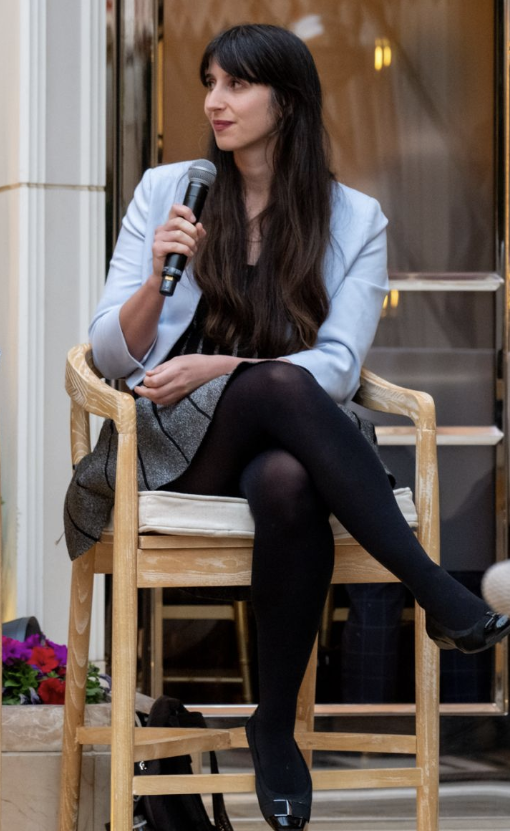

Lauren Thomas
Chief Economist at Deel
I'm an economist and data scientist focused on the future of work and the evolution of global labor markets.
As Deel's first Economics hire, I'm currently building the company's economics function, producing original research, partnering with academics, supporting policy and communications, and helping shape products through economic insight. You can read some of my work at our Substack.
Previously, I worked on data-driven storytelling and metric creation for the communications and policy teams at Stripe, labour economics research as Glassdoor's first EMEA economist, and measuring the impact of financial wellbeing products as a data scientist at a UK fintech startup.
I began my career as a senior research analyst at the Federal Reserve Bank of New York, and hold a Master's in Social Data Science from the University of Oxford, as well as a Master's in Economics from the University of Lyon 2, where I studied as a Fulbright Scholar.

Writing